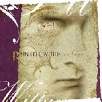

| Artist: | Rain Fell Within |
| Title: | Refuge |
| Label: | Dark Symphonies Dark 16 |
| Length(s): | 57 minutes |
| Year(s) of release: | 2002 |
| Month of review: | [06/2002] |
| 1) | Torn Apart | 5.47 |
| 2) | In The Knowing Of You | 7.01 |
| 3) | The Child Beneath | 4.35 |
| 4) | In My Dreams | 7.39 |
| 5) | Save Your Soul | 5.53 |
| 6) | Winter's Embrace | 2.12 |
| 7) | Into The Tower | 7.49 |
| 8) | Sirens | 6.42 |
| 9) | Burned Away | 6.21 |
| 10) | Passing Time | 3.36 |
The band rocks on in In The Knowing Of You with lot of bombastic keyboard choirs. The guitarist plays a good (Arabic tinged) melody on guitar, but it can not be heard often, only once in a while does it run through the music. The rest of the music is like a torrent. The vocal melody sounds a bit balladic, like a lament. Later the music winds down a bit and we get some violin like keyboards at the end. The sound is overall very full.
On The Child Beneath the tempo is much lower with lots of keyboards and piano. At this point, the vocals start to tire me. Dawn has a good voice, but uses her voice(s) in the same way in every song and this does not help making one differentiate the songs. The same holds for the vocal melodies.
The vocal similarities continue to exist in In My Dreams, where the beginning is percussive and tribal. The spaceous later gurgling guitar and dito keyboards make for a nice atmosphere. The drum plod on, and the synth strings add an orchestral feel.
Fast military drums open Save Your Soul. This sounds really nice with some percussive piano playing. On the whole the song breathes a dramatic, threatening air. The musical side to the song is again quite strong, but the vocals spoil the effect.
On the short Winter's Embrace the vocals are gone for minute. The track is somber with echoey guitar, the wind blowing and tinkling percussion. The melody is strong and although we do get some rest on this one, there is as yet no peace of mind.
Into The Tower is a romantic track with pointers to film music. This comes from the fact that the music is now calmer, more soothing, gurgles along a bit. In Sirens, the drummer gives the song the necessary drive and variation. I really like the way he plays. The vocals have an air of Tori amos on this track. The guitar solo does not appeal to me much, but the powerful rhythm guitar does. The end has marimba style playing and ends quietly.
The guitar solo on Burned Away is the high point of the track. For the rest this is a somewhat frolic piece of work. Vocal differentiation we finally get on closer Passing Time, because the vocals are single, not doubled here. Also it seems Laurie and not Dawn is singing here. The vocal melody is also much stronger. The song itself is melodramatic, but also beautiful, and that is what counts. The piano is percussive, lightly dancing, folky, but still dark.